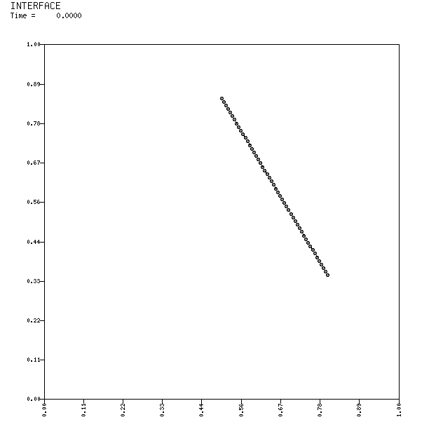
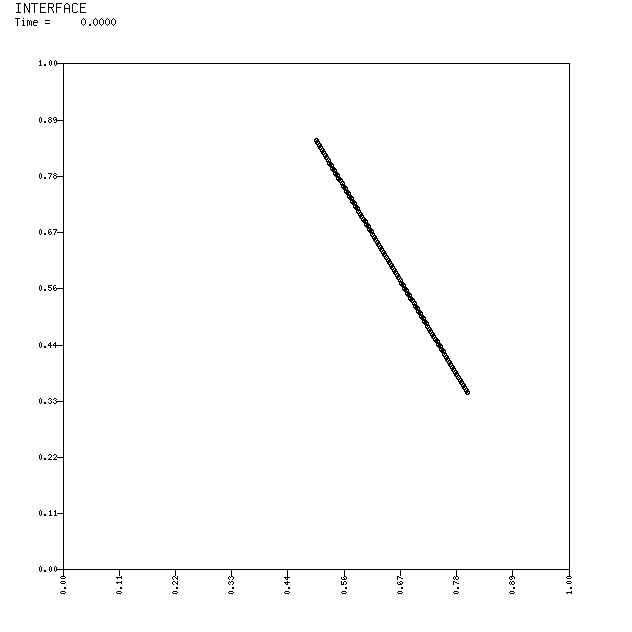
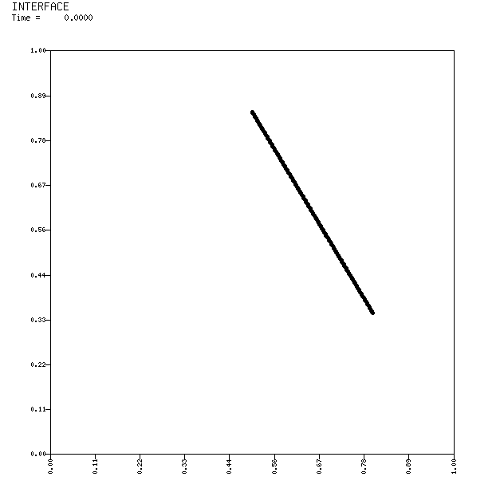
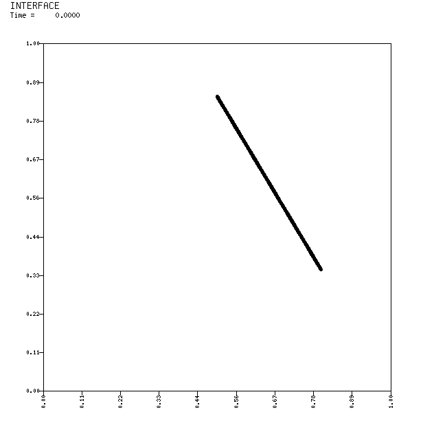
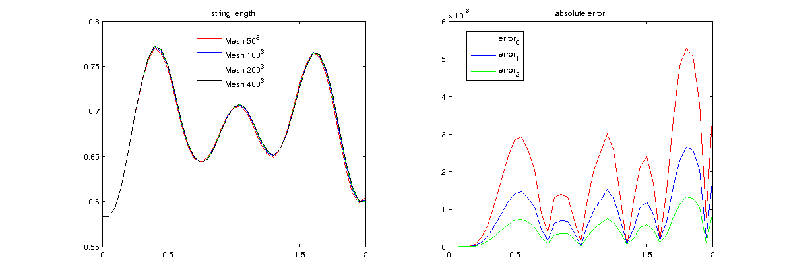
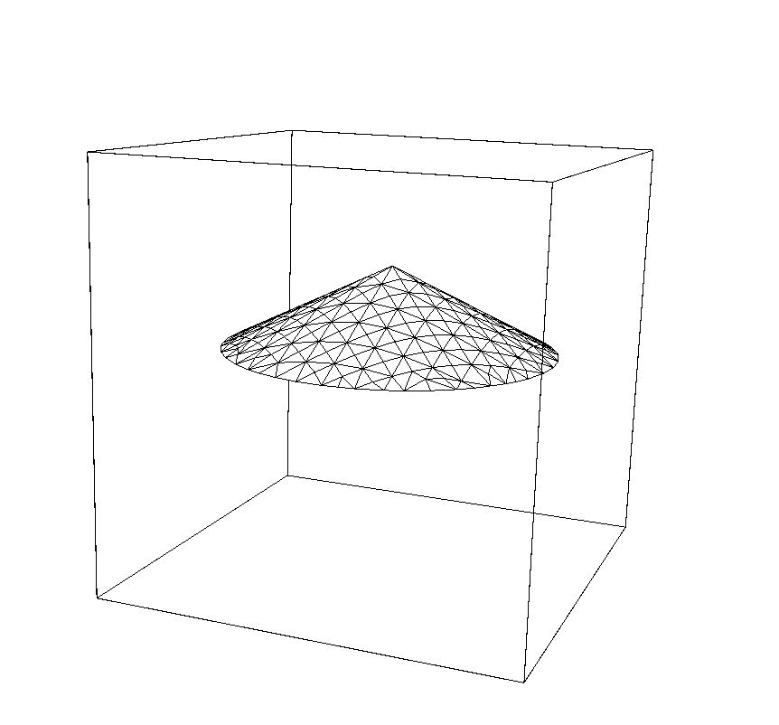
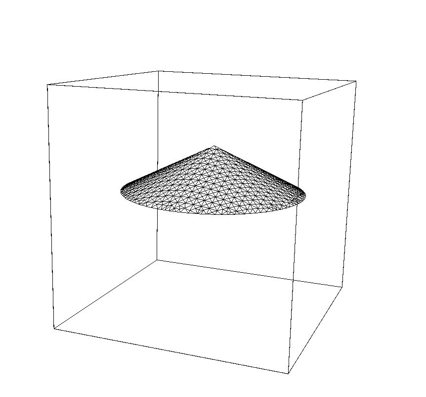
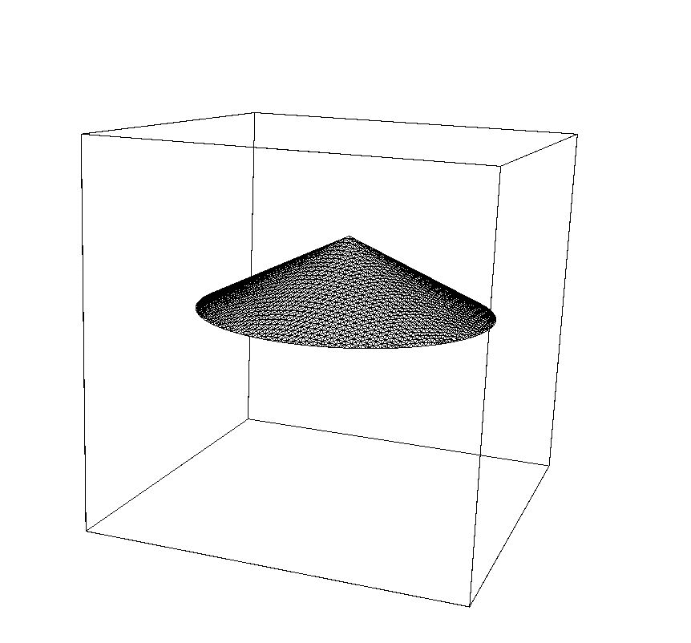
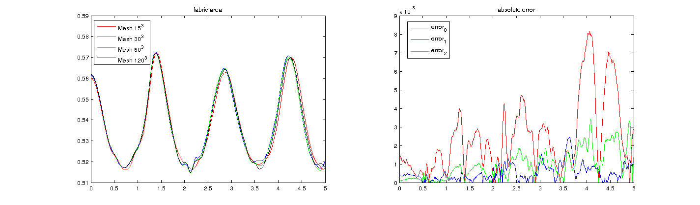

In this section, we test the string model with different mesh grid.
|  |
 |
 |
 |
| total mass: 0.5; points number: 50; point mass: 0.01; spring constant: 5000;mesh grid: 50*50;computing time: 1s |
total mass: 0.5; points number: 100; point mass: 0.005; spring constant: 10000;mesh grid: 100*100computing time: 2s |
total mass: 0.5; points number: 200; point mass: 0.0025; spring constant: 20000;mesh grid: 200*200computing time: 6s |
total mass: 0.5; points number: 400; point mass: 0.00125; spring constant: 40000;mesh grid: 400*400computing time: 18s |
|  |
This model shows a nice convergence.
| L1 | L2 | L_inf | convergence rate | error between |
| 0.0017 | 0.0144 | 0.0053 | 0.9979 | 50 and 100 |
| 0.0009 | 0.0072 | 0.0026 | 1.0018 | 100 and 200 |
| 0.0004 | 0.0036 | 0.0013 | - | 200 and 400 |
|
|
Here, we test the drum model with different mesh grids and comparing them with each other.
|  |
 |
 |
| total mass: 380; points number: 266; point mass: 1.428571; mesh grid: 15*15*15time: 21m 6s |
total mass: 380; points number: 990; point mass: 0.383838; mesh grid: 30*30*30time: 1h 58m 10s |
total mass: 380; points number: 3790; point mass: 0.100264; mesh grid: 60*60*60time: 12h 57m 3s |
To see the difference between each experiment, we study the behaviour of the area of each experiment
|  |
This figure shows the behaviors of areas with different mesh grids.
From the figure, we can see a nice convergence of the Cauchy error as the mesh grid changing.
| L1 | L2 | L_inf | error between |
| 0.0024 | 0.2290 | 0.0081 | 15 and 30 |
| 0.0005 | 0.0508 | 0.0025 | 30 and 60 |
| 0.0009 | 0.0890 | 0.0034 | 60 and 120 |
|
|